Every field, caption and template for the Daag Page, click Copy, paste into Facebook. Character counts update live against Meta's limits. Full reasoning lives in page-setup.md, content-plan.md and moderation-and-risk.md.
Page → Settings → Page details. Category names stay in English because that is how Meta lists them. Do not pick a News/Media category, it routes Daag into Meta's news policy surface and suppresses link reach. The page name keeps Daag alongside দাগ because people search in both scripts.
| Page name | দাগ · Daag | |
| Username | daagarchive | |
| Primary category | Nonprofit organization | |
| Secondary | Community organization | |
| Website | https://www.daag-bd.com | |
| hello@daag-bd.com | ||
| CTA button | Learn more → daag-bd.com | |
| Service area | Bangladesh (no street address) |
Lock the name now. Meta limits how often a Page name can change and reviews each request.
Meta's Bio field is ~101 characters. Bangla characters count the same as Latin ones, so the counts below are what Meta will see. Use the longest version that fits.
অনলাইনে হেনস্তা আর নোংরা কমেন্টের যাচাই করা আর্কাইভ। daag-bd.com
ভুক্তভোগীকেই দোষ চাপানো কমেন্ট, সোর্স লিংকসহ যাচাই করা। daag-bd.com
অনলাইনে যারা হেনস্তা করে, নোংরা ভাষায় কমেন্ট করে, ভুক্তভোগীকেই দোষ চাপায়, তাদের কথা সোর্স লিংকসহ যাচাই করে রাখা হয়।
দাগ। অনলাইনে হেনস্তা, নোংরা কমেন্ট আর ভুক্তভোগীকেই দোষ চাপানোর যাচাই করা আর্কাইভ। নারী, পুরুষ, যে কেউ। প্রতিটি এন্ট্রি সোর্স লিংক ধরে মিলিয়ে দেখা হয়, আর প্রতিটির বিরুদ্ধে আপত্তি জানানো যায়। daag-bd.com
Page → About → Additional information. Post the same text in the feed too, so it is searchable and so critics find it before they find a single entry.
দাগ। যে চিহ্ন সহজে মোছে না। কেউ অনলাইনে হেনস্তার শিকার হলে, কিংবা কোনো নির্যাতনের খবর ছড়ালে, কমেন্ট সেকশনেই শুরু হয় দ্বিতীয় দফার হেনস্তা। ভুক্তভোগীকেই দোষ দেওয়া হয়। অভিযুক্তের পক্ষ নেওয়া হয়। আর সপ্তাহ ঘুরতেই কমেন্টগুলো মুছে যায়, চাপা পড়ে যায়। প্রমাণও হারিয়ে যায় তার সঙ্গে। দাগ সেই প্রমাণ রেখে দেয়। কেউ একটা প্রকাশ্য কমেন্ট জমা দেন, সোর্স পোস্টের লিংকসহ। মডারেটর নিজে লিংক খুলে মিলিয়ে দেখেন। যাচাই হলে পুরো প্রসঙ্গ, সংস্করণ নম্বর আর সম্পাদনার ইতিহাসসহ সেটা আর্কাইভে ওঠে, যেখানে যে কেউ খুঁজে দেখতে পারেন। দাগ সবার জন্য। নারী, পুরুষ, যে কেউ অনলাইনে হেনস্তার শিকার হতে পারেন, আর যে কেউ প্রমাণ জমা দিতে পারেন। দাগ যা: · যাচাই করা প্রমাণের আর্কাইভ · নাগরিক উদ্যোগে নথি রাখার কাজ · স্বচ্ছতা আর জনসচেতনতার জায়গা দাগ যা নয়: · কাউকে প্রকাশ্যে হেয় করার হাতিয়ার · বিচারবহির্ভূত শাস্তির মঞ্চ · হয়রানির যন্ত্র · রায় ঘোষণার জায়গা আমরা ব্যক্তিগত মেসেজ প্রকাশ করি না। যা নিজে খুলে মিলিয়ে দেখা যায় না, তা প্রকাশ করি না। কারও বিরুদ্ধে কোনো পদক্ষেপের ডাক দিই না। যার নাম এসেছে, তিনি আপত্তি জানাতে পারেন। সেটা দেখে আলাদা একটা প্যানেল। আর্কাইভ, পদ্ধতি আর আপিল: www.daag-bd.com প্রতিটি শব্দ দাগ রেখে যায়।
Five covers below. cover-hero.png is the one to upload, it explains the project to someone who arrives knowing nothing. The other three are brand statements, useful later as a change of pace. Each of the eight posts already has its own graphic, shown with the caption in section 05. Right-click → Save image, or drag straight from Finder into Facebook. Re-render after edits with assets/templates/build.sh.
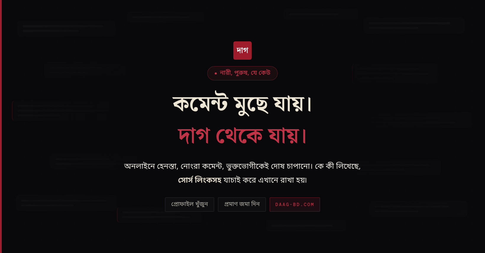
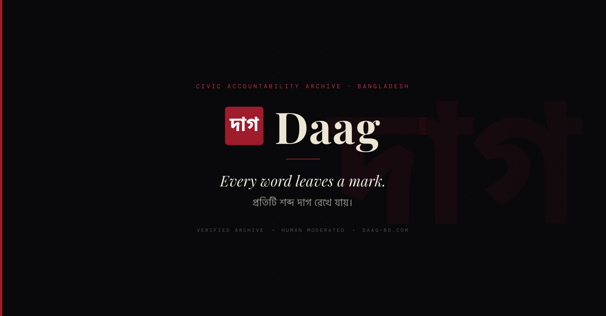
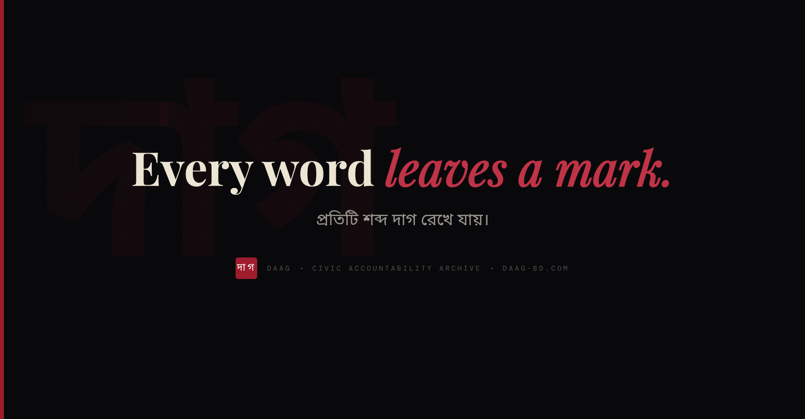
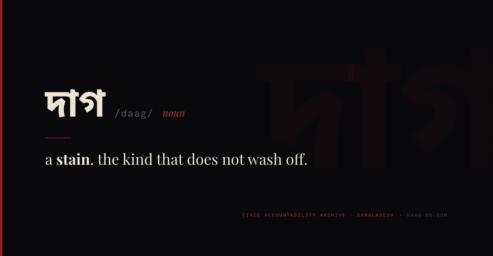
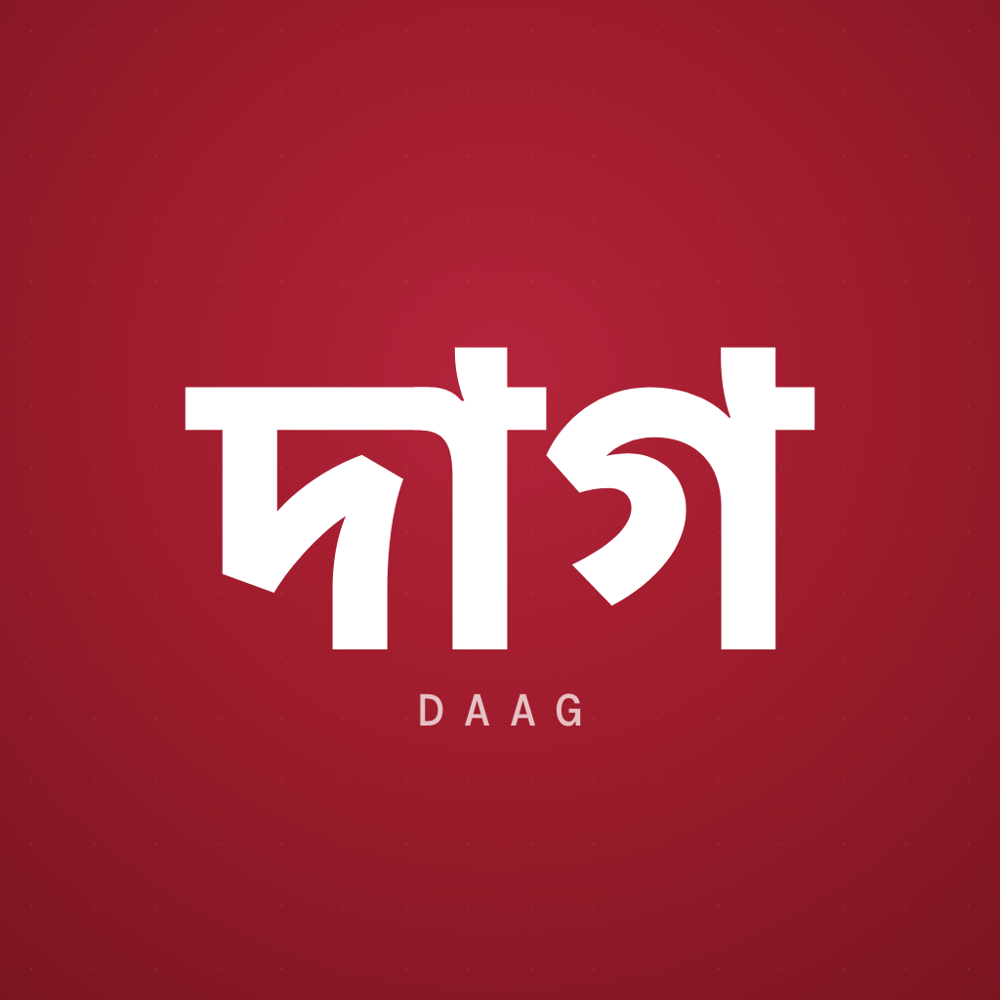
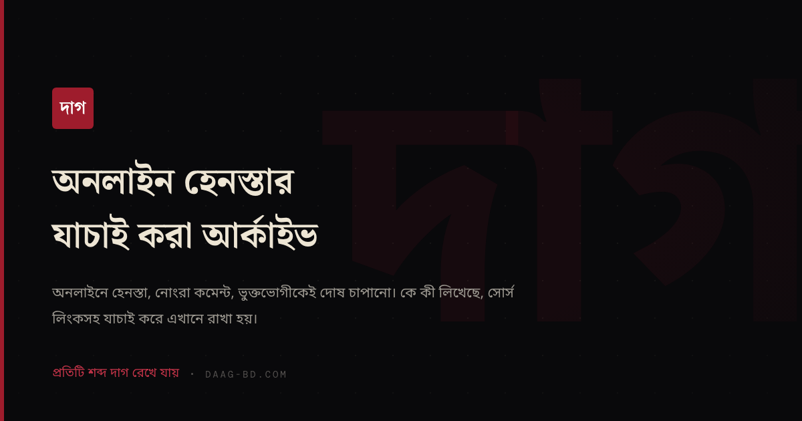
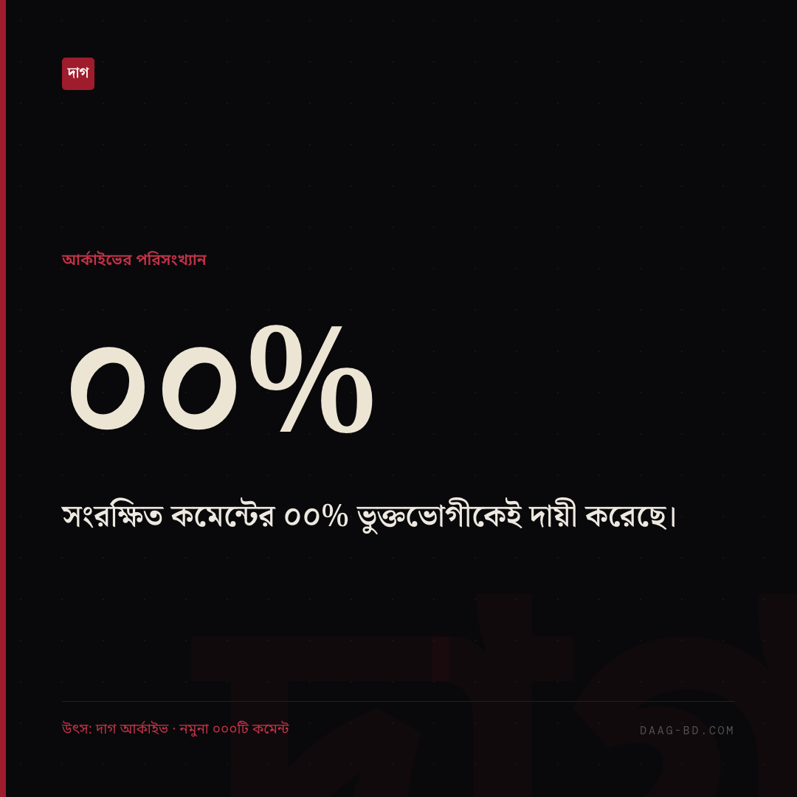
Three a week, Sunday, Tuesday, Thursday, around 8-9pm Bangladesh time. Moderate comments for two hours after each post; if nobody is free to do that, don't post.
দাগ। যে চিহ্ন সহজে মোছে না। কেউ অনলাইনে হেনস্তার শিকার হলে কমেন্ট সেকশনেই শুরু হয় দ্বিতীয় দফার হেনস্তা। ভুক্তভোগীকেই দোষ দেওয়া হয়। অভিযুক্তের পক্ষ নেওয়া হয়। আর সপ্তাহ ঘুরতেই কমেন্টগুলো মুছে যায়, প্রমাণও মুছে যায় তার সঙ্গে। দাগ সেই প্রমাণ রেখে দেয়। অনলাইনে হেনস্তা, নোংরা কমেন্ট আর ভুক্তভোগীকেই দোষ চাপানোর যাচাই করা পাবলিক আর্কাইভ। নারী, পুরুষ, যে কেউ। প্রতিটি এন্ট্রি সোর্স লিংক ধরে মিলিয়ে দেখা হয়। প্রতিটি এন্ট্রির বিরুদ্ধে আপত্তি জানানো যায়। দাগ কাউকে হেয় করার হাতিয়ার নয়। আমরা ব্যক্তিগত মেসেজ প্রকাশ করি না, যাচাই করা যায় না এমন কিছু প্রকাশ করি না, কারও বিরুদ্ধে কোনো পদক্ষেপের ডাক দিই না। আর্কাইভ আর পদ্ধতি → www.daag-bd.com প্রতিটি শব্দ দাগ রেখে যায়। #দাগ #Daag #অনলাইনহেনস্তা #StopVictimBlaming
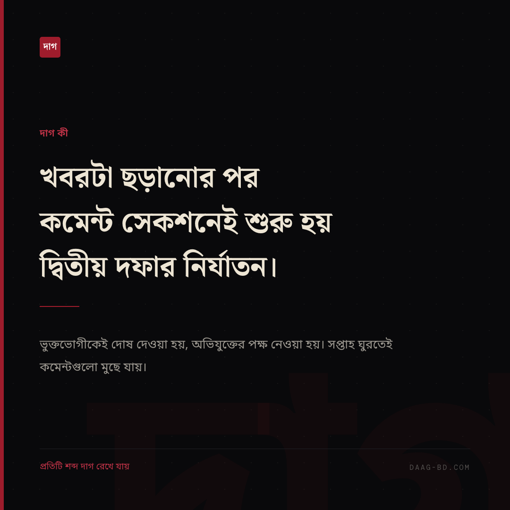
Pin this one. It is the first thing every journalist, critic and angry commenter reads.
পাঁচটা নাম ভাবা হয়েছিল। নিশান, মানে চিহ্ন। মুখবির, মানে সাক্ষী। চরিত্র, যে শব্দটা ভুক্তভোগীর বিরুদ্ধেই সবচেয়ে বেশি ব্যবহার হয়। চিহ্নিত, মানে শনাক্ত করা। বেছে নেওয়া হলো দাগ। যে দাগ সহজে মোছে না। নামটা আঙুল তোলে যে কমেন্ট করেছে তার দিকে, যাকে নিয়ে করেছে তার দিকে নয়। পুরো কাজটার দিক এটাই। www.daag-bd.com #দাগ #Daag
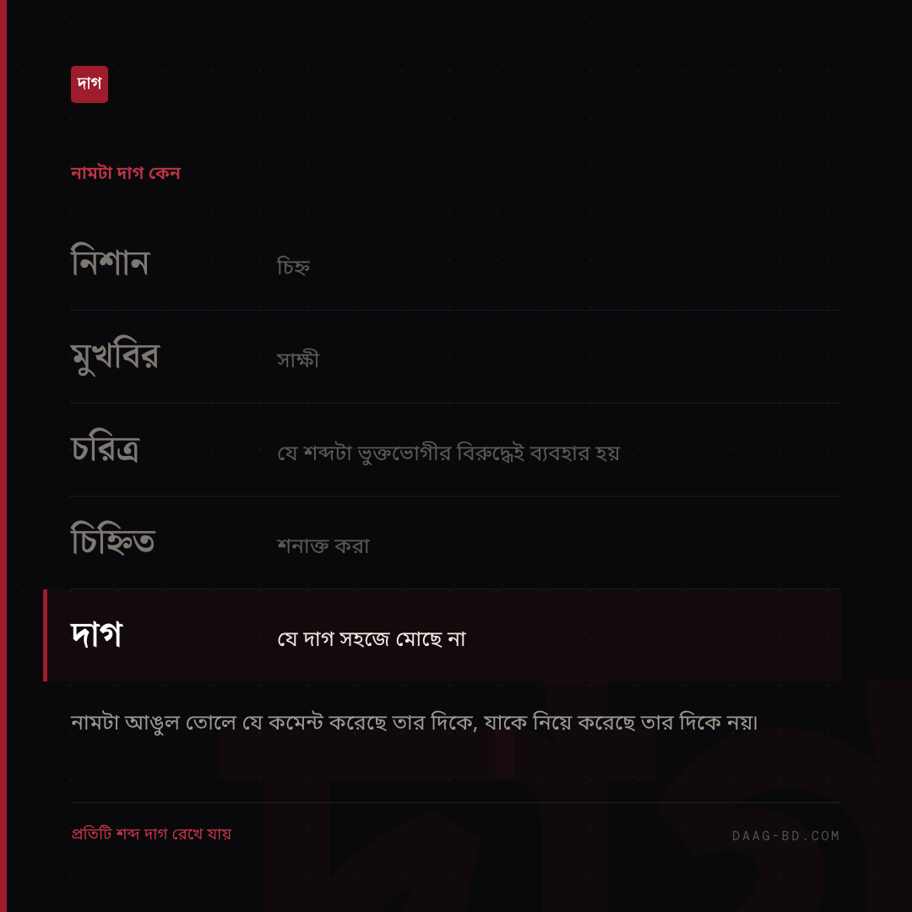
একটা এন্ট্রি আর্কাইভে ঢোকে যেভাবে: ১। প্রকাশ্য কমেন্টটা, সোর্স পোস্টের লিংক আর যে কমেন্ট করেছে তার প্রোফাইল লিংকসহ কেউ জমা দেন। ২। মডারেটর নিজে দুটো লিংকই খুলে দেখেন: কমেন্টটা আসল, প্রকাশ্য, আর ঠিক ওই প্রোফাইলেরই। ৩। ধরন অনুযায়ী ভাগ করা হয়: দোষারোপ, হুমকি, যৌন হয়রানি। ঘটনার ধরনও ট্যাগ করা হয়। ৪। প্রসঙ্গ, সংস্করণ নম্বর আর সম্পাদনার ইতিহাসসহ প্রকাশ করা হয়। ৫। নাম এসেছে যার, তিনি আপত্তি জানাতে পারেন। আলাদা প্যানেল সেটা দেখে। যা নেওয়া হয় না: ব্যক্তিগত মেসেজ, সোর্স ছাড়া স্ক্রিনশট, ব্যঙ্গ, প্রসঙ্গ কেটে নেওয়া অংশ, আর যা আমরা নিজে খুলে মিলিয়ে দেখতে পারি না। পুরো পদ্ধতি → www.daag-bd.com #দাগ #পদ্ধতি
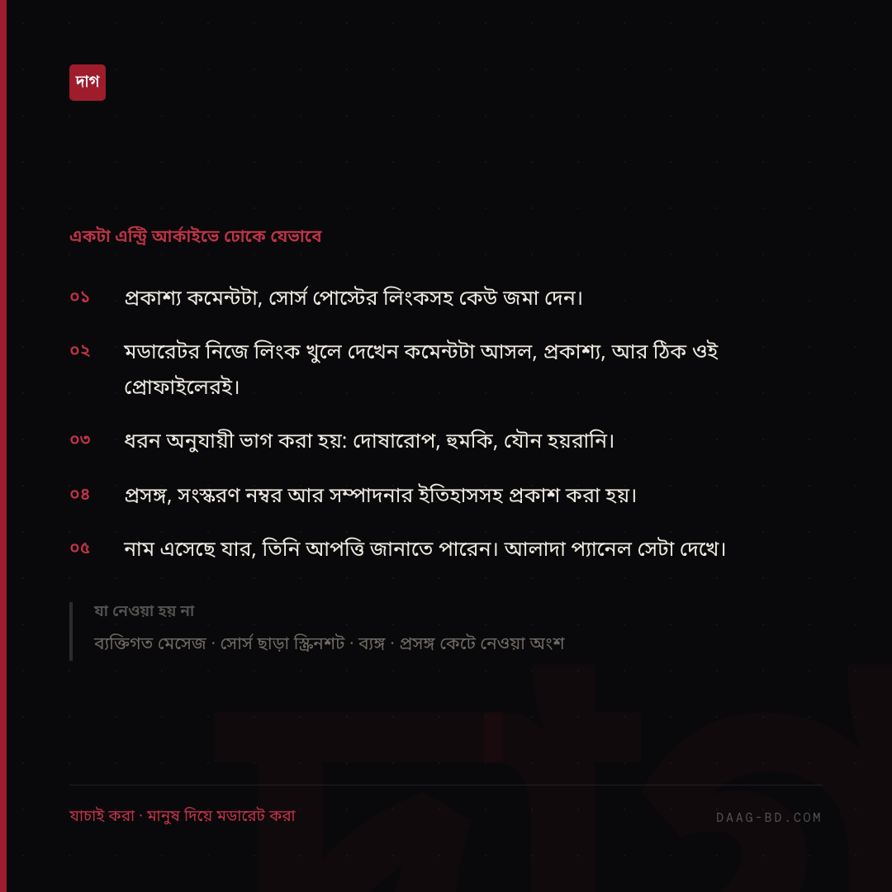
এটা হুমকি হয়ে আসে না। আসে প্রশ্ন হয়ে। “এত রাতে বাইরে কী?” “নিজেই তো সুযোগ দিয়েছে।” “আগে ভাবা উচিত ছিল।” “এতদিন চুপ ছিল কেন?” প্রতিটা প্রশ্ন আলোচনাটা ঘুরিয়ে দেয়। কী করা হয়েছে, সেখান থেকে সরিয়ে নিয়ে যায় সে কী করেছিল সেদিকে। একটা কমেন্ট সেকশনে হাজারবার লেখা হলে সেটা পড়া প্রত্যেককে শিখিয়ে দেয়, মুখ খুললে তাকে কী কী জবাব দিতে হবে। এজন্যই আমরা এগুলো রেখে দিই। #দাগ #StopVictimBlaming
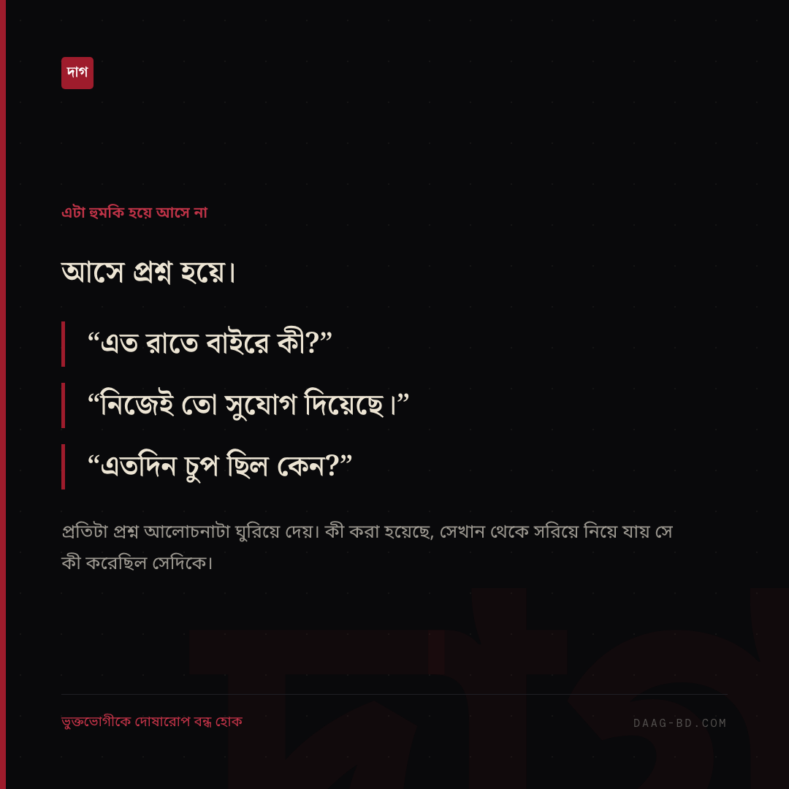
এই মাসের একটা ঘটনা থেকে, একটা সংরক্ষিত কমেন্ট। পরিচয় এখানে দেওয়া হয়নি। যাচাই করা এন্ট্রি পুরো প্রসঙ্গ আর জবাব দেওয়ার সুযোগসহ প্রকাশ করা হয় www.daag-bd.com-এ। #দাগ #অনলাইনহেনস্তা
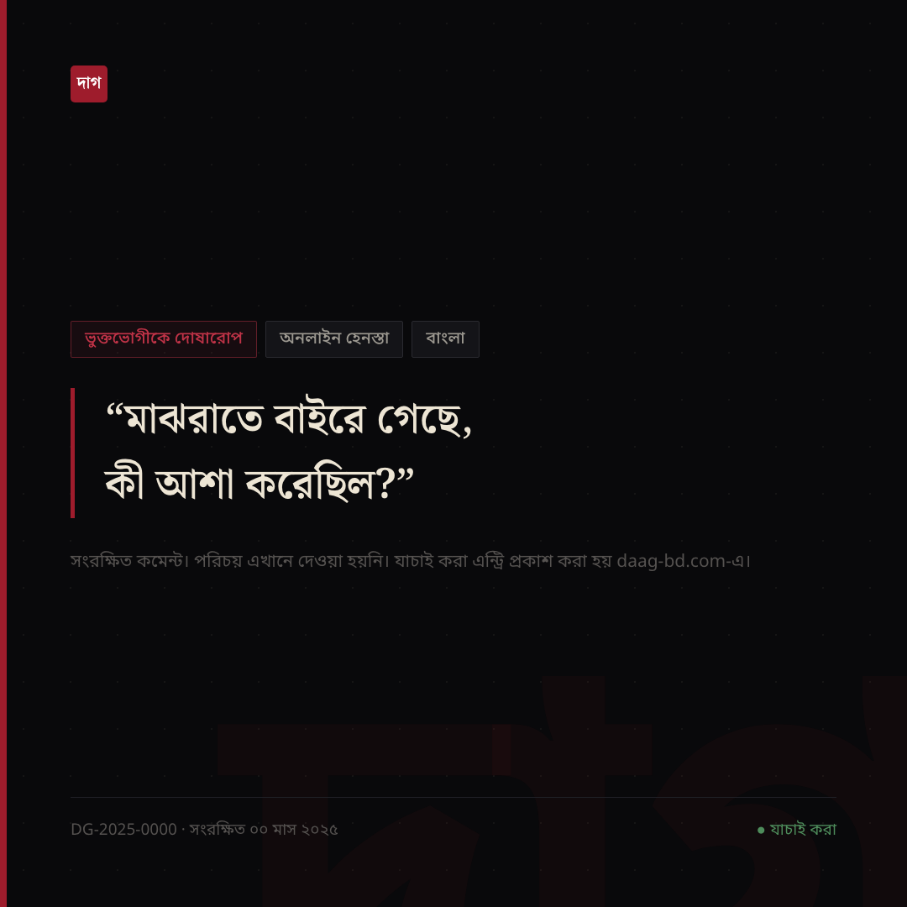
চোখে পড়লে আপনিও রেখে দিতে পারেন। যা যা লাগবে: কমেন্টটা যে পোস্টে সেই পোস্টের লিংক, যে কমেন্ট করেছে তার প্রকাশ্য প্রোফাইল লিংক, আর এডিট না করা স্ক্রিনশট। রেফারেন্স নম্বর পাবেন, DG-2025-XXXX, আর জমাটা কোন অবস্থায় আছে দেখতে পারবেন। নিজের পরিচয় দেওয়া বাধ্যতামূলক নয়, আর কখনো প্রকাশ করা হয় না। জমা দিন → www.daag-bd.com #দাগ #Daag
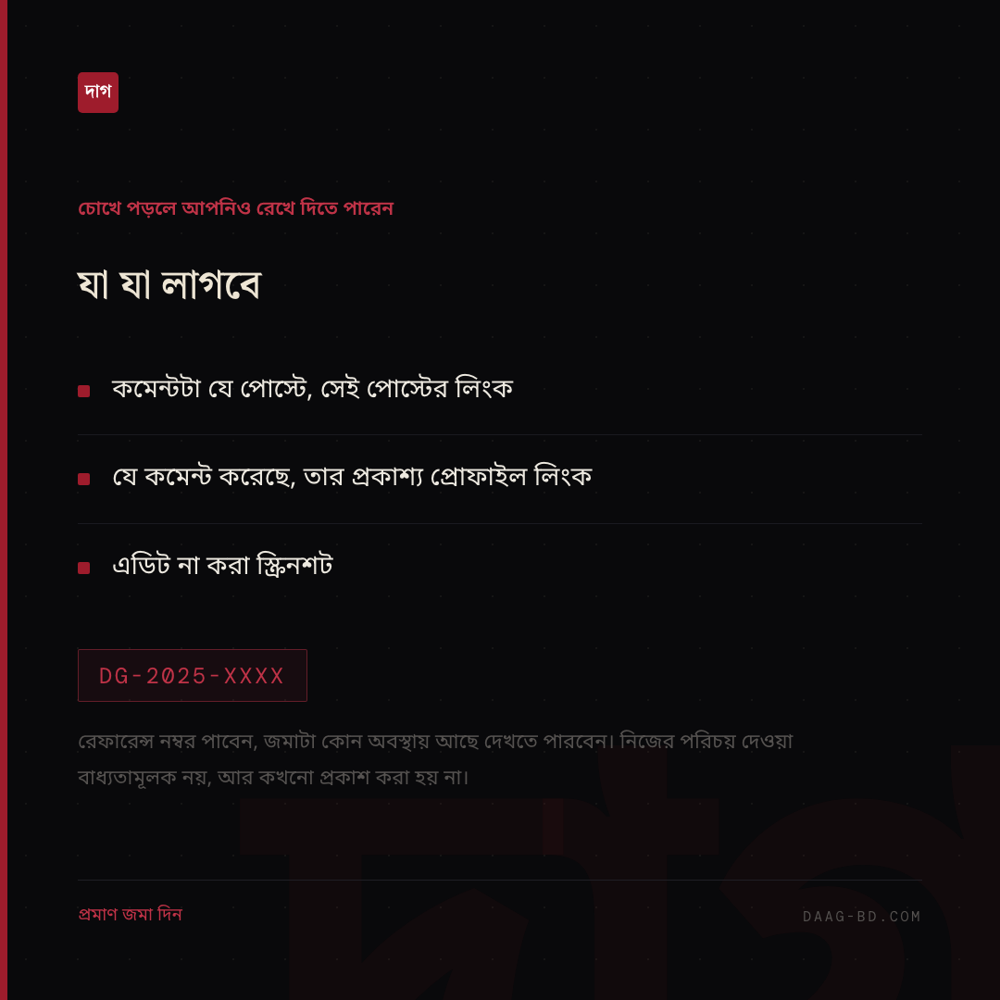
দাগের প্রতিটি এন্ট্রির বিরুদ্ধে আপত্তি জানানো যায়। কোনো এন্ট্রিতে ভুল মানুষের নাম এসেছে, প্রসঙ্গ কেটে নেওয়া হয়েছে, বা তথ্যটাই ভুল। মনে হলে আপত্তি জানান। সেটা দেখে আলাদা প্যানেল, যারা এন্ট্রিটা অনুমোদন করেননি। এন্ট্রি সংশোধন করা যায়, টীকা যোগ করা যায়, সরিয়েও ফেলা যায়। সংস্করণ-ইতিহাসে লেখা থাকে কী বদলেছে। যে আর্কাইভ সংশোধন করা যায় না, সেটা আর্কাইভ নয়। সেটা অভিযোগ। www.daag-bd.com #দাগ #স্বচ্ছতা
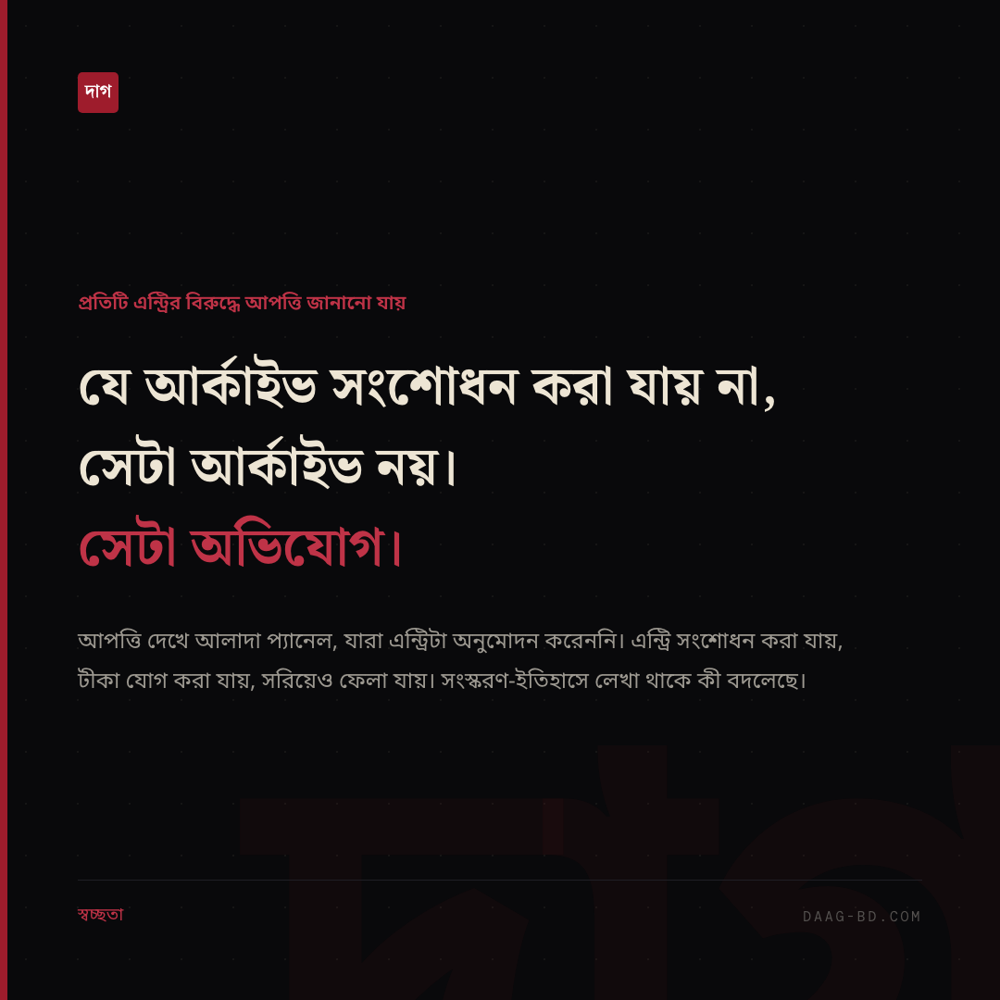
এখনই সহায়তা দরকার হলে: ৯৯৯ · জাতীয় জরুরি সেবা ১০৯ · নারী ও শিশু নির্যাতন প্রতিরোধে সহায়তা ১০৯৮ · শিশু হেল্পলাইন দাগ নথি রাখার উদ্যোগ। আমরা জরুরি সেবা নই, চলমান কোনো পরিস্থিতিতে হস্তক্ষেপ করতে পারি না। উপরের নম্বরগুলো ব্যবহার করুন।
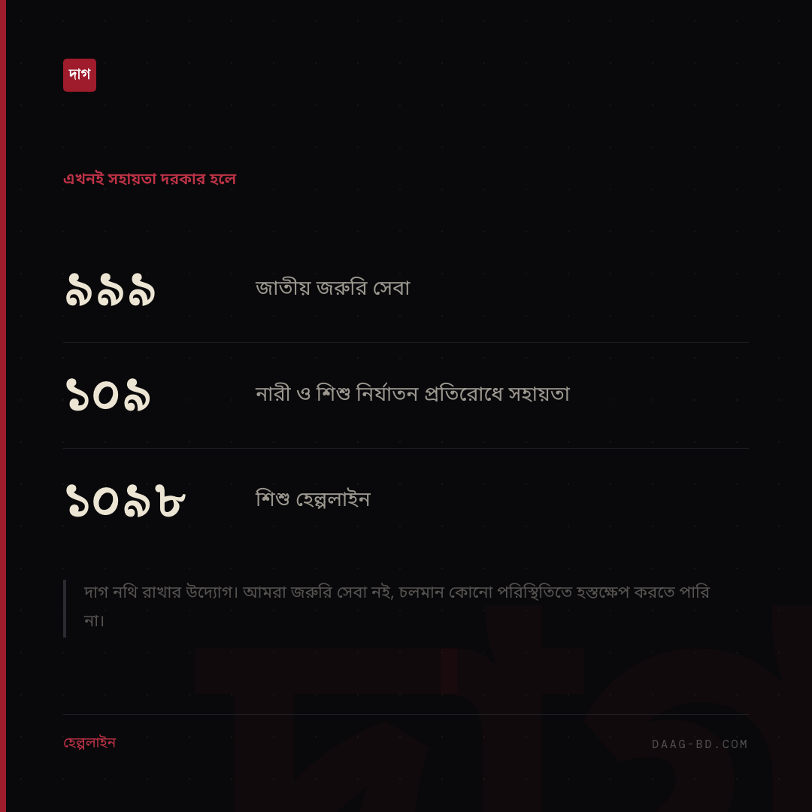
Confirm these helpline numbers are current on the day you publish.
Inbox → Automations → Instant reply. Submissions will arrive by DM, DMs carry no source link and cannot be verified, so route them to the portal every time.
দাগ-এ লেখার জন্য ধন্যবাদ। মেসেঞ্জারে আমরা প্রমাণ জমা নিতে পারি না। এখানে সোর্স লিংক থাকে না, যাচাইও করা যায় না। অনুগ্রহ করে জমাদান পোর্টাল ব্যবহার করুন, সেখানে লিংক সংরক্ষিত থাকে আর আপনি একটা রেফারেন্স নম্বর পান: www.daag-bd.com এখনই বিপদে থাকলে ৯৯৯-এ কল করুন। নারী ও শিশু নির্যাতন সংক্রান্ত সহায়তার জন্য ১০৯। সংবাদ, অংশীদারিত্ব বা আপত্তি সংক্রান্ত যোগাযোগ: hello@daag-bd.com
Settings → Privacy → Page and tagging → Page moderation. Paste as a comma-separated list; matching comments are auto-hidden. Also set Profanity filter → Strong, it only covers English, which is why the list below matters.
মাগি, মাগী, বেশ্যা, বেশ্যামি, খানকি, খানকী, রেন্ডি, ছিনাল, নষ্টা, চরিত্রহীন, গণিকা, চুদ, চোদা, চুদি, বাল, খাঙ্কি, মাগীবাজ, magi, magee, beshya, beshsha, khanki, khanky, rendi, chinal, noshta, choda, chud, chudi, maal, item, bazari, slut, whore, bitch, hoe, prostitute, randi
facebook.com/, fb.com/, m.facebook.com/, profile.php, @gmail.com, 01
The 01 entry catches Bangladeshi mobile numbers and will produce false positives, check the hidden queue weekly and restore anything innocent. Add new spellings as they appear; attackers reshape them fast.
Use verbatim, never improvise, never reply twice in the same thread. Arguing in a thread your opponent controls is how a documentation project becomes a participant in the fight.
প্রশ্নটা ন্যায্য, আর আমরা এটা মাথায় রেখেই কাজটা সাজিয়েছি। দাগে ওঠে কেবল প্রকাশ্যে দৃশ্যমান কমেন্ট, যেগুলো সোর্স লিংক ধরে মিলিয়ে দেখা হয়েছে। ব্যক্তিগত মেসেজ ওঠে না, যাচাই করা যায় না এমন দাবি ওঠে না, কারও বিরুদ্ধে কোনো পদক্ষেপের ডাকও আমরা দিই না। প্রতিটি এন্ট্রির বিরুদ্ধে আপত্তি জানানো যায়, আর সেটা দেখে আলাদা প্যানেল, যারা এন্ট্রিটা অনুমোদন করেননি। পুরো পদ্ধতি প্রকাশ্য: www.daag-bd.com কোনো নির্দিষ্ট এন্ট্রি ভুল মনে হলে আপত্তি জানান। প্রক্রিয়াটা ঠিক এজন্যই আছে।
আমরা অভিযোগ প্রকাশ করি না, প্রকাশ করি এমন কমেন্ট, যা একটা যাচাইযোগ্য লিংকে প্রকাশ্যে আছে এবং মডারেটর নিজে খুলে মিলিয়ে দেখেছেন। আইডি হ্যাক হয়ে থাকলে আপত্তি জানানোর প্রক্রিয়াটা ঠিক সেজন্যই আছে। এন্ট্রি সংশোধন করা যায়, সরিয়েও ফেলা যায়। সংস্করণ-ইতিহাসে লেখা থাকে কী বদলেছে।
অনুগ্রহ করে www.daag-bd.com-এ আপত্তি জানান, যাতে পর্যালোচনা প্যানেল ঠিকভাবে দেখতে পারে। কমেন্টের ঘরে আমরা পরিচয় যাচাই করতে পারি না, বিষয়টার মীমাংসাও করতে পারি না। আপত্তি দেখেন তাঁরা, যাঁরা এন্ট্রিটা অনুমোদনের সঙ্গে যুক্ত ছিলেন না।
কমেন্টটা আমরা সরিয়ে দিয়েছি। প্রমাণ জমা দেওয়ার জায়গা সাবমিশন পোর্টাল, সেখানে সেটা যাচাই করা যায়, আর যার নাম আসছে তিনি জবাব দেওয়ার সুযোগ পান। কমেন্টের ঘরে সেটা হয় না। www.daag-bd.com
Legal threats: do not reply at all. Screenshot, preserve, escalate, see moderation-and-risk.md §5.
Work top to bottom before the first post. Ticks are saved in this browser.